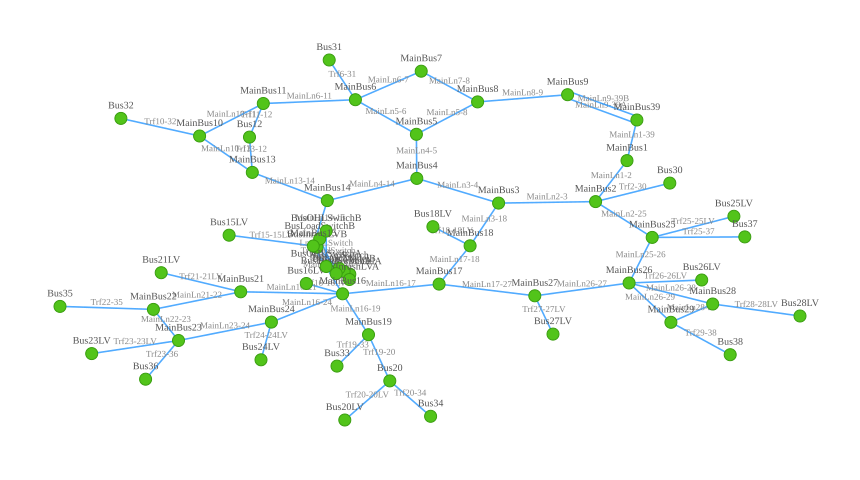

EHV · 345 kV · 60 Hz · expected test sets: test + benchmark · cells: 433 done / 0 pending / 0 failed
Committed held_out split sizes (episode-level, family-pure): benchmark: 9708 · test: 1503 · train: 6997 · val: 1500 — files: src/evemtbench/splits/v1.0/held_out/ieee39

59 buses/elements · 61 lines/transformers/switches · layout computed from aux overlay graph.pickle (benchmark/IEEE39BusSystem) · provenance in assets/manifest.json
| task | grid | baseline | headline | test | benchmark | params | fit/seed | trace |
|---|---|---|---|---|---|---|---|---|
| event_classification_global | ieee39 | majority | balanced_accuracy ↑ | 0.062 ± 0.000 (n=5) | 0.062 ± 0.000 (n=5) | — | 0s | trace: output · eval-code · log · train-code · config · W&B |
| event_classification_global | ieee39 | random_forest | balanced_accuracy ↑ | 0.762 ± 0.002 (n=5) | 0.553 ± 0.018 (n=5) | — | 9.5m | trace: output · eval-code · log · train-code · config · W&B |
| event_classification_global | ieee39 | mlp | balanced_accuracy ↑ | 0.616 ± 0.003 (n=5) | 0.262 ± 0.007 (n=5) | 103.4M | 1.8h | trace: output · eval-code · log · train-code · config · W&B |
| event_classification_global | ieee39 | gru | balanced_accuracy ↑ | 0.592 ± 0.037 (n=5) | 0.219 ± 0.016 (n=5) | 214k | 1.3h | trace: output · eval-code · log · train-code · config · W&B |
| event_classification_global | ieee39 | cnn | balanced_accuracy ↑ | 0.582 ± 0.017 (n=5) | 0.226 ± 0.011 (n=5) | 237k | 46.2m | trace: output · eval-code · log · train-code · config · W&B |
| event_classification_global | ieee39 | resnet | balanced_accuracy ↑ | 0.640 ± 0.024 (n=5) | 0.283 ± 0.045 (n=5) | 747k | 39.2m | trace: output · eval-code · log · train-code · config · W&B |
| event_detection_global | ieee39 | majority | balanced_accuracy ↑ | 0.500 ± 0.000 (n=5) | 0.500 ± 0.000 (n=5) | — | 0s | trace: output · eval-code · log · train-code · config · W&B |
| event_detection_global | ieee39 | random_forest | balanced_accuracy ↑ | 0.930 ± 0.000 (n=5) | 0.506 ± 0.000 (n=5) | — | 18.3m | trace: output · eval-code · log · train-code · config · W&B |
| event_detection_global | ieee39 | mlp | balanced_accuracy ↑ | 0.843 ± 0.001 (n=5) | 0.981 ± 0.001 (n=5) | 103.4M | 1.6h | trace: output · eval-code · log · train-code · config · W&B |
| event_detection_global | ieee39 | gru | balanced_accuracy ↑ | 0.770 ± 0.051 (n=5) | 0.867 ± 0.128 (n=5) | 211k | 1.5h | trace: output · eval-code · log · train-code · config · W&B |
| event_detection_global | ieee39 | cnn | balanced_accuracy ↑ | 0.786 ± 0.005 (n=5) | 0.706 ± 0.313 (n=5) | 234k | 1.7h | trace: output · eval-code · log · train-code · config · W&B |
| event_detection_global | ieee39 | resnet | balanced_accuracy ↑ | 0.832 ± 0.058 (n=5) | 0.775 ± 0.314 (n=5) | 744k | 1.6h | trace: output · eval-code · log · train-code · config · W&B |
| event_state_global | ieee39 | majority | balanced_accuracy ↑ | 0.333 ± 0.000 (n=5) | 0.333 ± 0.000 (n=5) | — | 0s | trace: output · eval-code · log · train-code · config · W&B |
| event_state_global | ieee39 | random_forest | balanced_accuracy ↑ | 0.911 ± 0.001 (n=5) | 0.643 ± 0.021 (n=5) | — | 16.2m | trace: output · eval-code · log · train-code · config · W&B |
| event_state_global | ieee39 | mlp | balanced_accuracy ↑ | 0.787 ± 0.001 (n=5) | 0.749 ± 0.026 (n=5) | 103.4M | 2.0h | trace: output · eval-code · log · train-code · config · W&B |
| event_state_global | ieee39 | gru | balanced_accuracy ↑ | 0.637 ± 0.037 (n=5) | 0.636 ± 0.009 (n=5) | 212k | 1.5h | trace: output · eval-code · log · train-code · config · W&B |
| event_state_global | ieee39 | cnn | balanced_accuracy ↑ | 0.707 ± 0.016 (n=5) | 0.681 ± 0.144 (n=5) | 234k | 1.7h | trace: output · eval-code · log · train-code · config · W&B |
| event_state_global | ieee39 | resnet | balanced_accuracy ↑ | 0.729 ± 0.034 (n=5) | 0.656 ± 0.224 (n=5) | 744k | 1.3h | trace: output · eval-code · log · train-code · config · W&B |
| fault_category_global | ieee39 | majority | balanced_accuracy ↑ | 0.500 ± 0.000 (n=5) | 0.500 ± 0.000 (n=5) | — | 0s | trace: output · eval-code · log · train-code · config · W&B |
| fault_category_global | ieee39 | random_forest | balanced_accuracy ↑ | 0.941 ± 0.000 (n=5) | 0.667 ± 0.016 (n=5) | — | 2.8m | trace: output · eval-code · log · train-code · config · W&B |
| fault_category_global | ieee39 | mlp | balanced_accuracy ↑ | 0.962 ± 0.001 (n=5) | 0.536 ± 0.088 (n=5) | 103.4M | 31.4m | trace: output · eval-code · log · train-code · config · W&B |
| fault_category_global | ieee39 | gru | balanced_accuracy ↑ | 0.962 ± 0.002 (n=5) | 0.910 ± 0.055 (n=5) | 212k | 18.4m | trace: output · eval-code · log · train-code · config · W&B |
| fault_category_global | ieee39 | cnn | balanced_accuracy ↑ | 0.955 ± 0.002 (n=5) | 0.693 ± 0.332 (n=5) | 234k | 19.0m | trace: output · eval-code · log · train-code · config · W&B |
| fault_category_global | ieee39 | resnet | balanced_accuracy ↑ | 0.957 ± 0.004 (n=5) | 0.794 ± 0.334 (n=5) | 744k | 14.4m | trace: output · eval-code · log · train-code · config · W&B |
| fault_category_line | ieee39 | majority | balanced_accuracy ↑ | 0.500 ± 0.000 (n=5) | 0.500 ± 0.000 (n=5) | — | 0s | trace: output · eval-code · log · train-code · config · W&B |
| fault_category_line | ieee39 | random_forest | balanced_accuracy ↑ | 0.951 ± 0.001 (n=5) | 0.999 ± 0.000 (n=5) | — | 17s | trace: output · eval-code · log · train-code · config · W&B |
| fault_category_line | ieee39 | mlp | balanced_accuracy ↑ | 0.963 ± 0.003 (n=5) | 0.998 ± 0.002 (n=5) | 3.1M | 32s | trace: output · eval-code · log · train-code · config · W&B |
| fault_category_line | ieee39 | gru | balanced_accuracy ↑ | 0.964 ± 0.001 (n=5) | 0.998 ± 0.001 (n=5) | 55k | 1.1m | trace: output · eval-code · log · train-code · config · W&B |
| fault_category_line | ieee39 | cnn | balanced_accuracy ↑ | 0.964 ± 0.003 (n=5) | 0.997 ± 0.002 (n=5) | 52k | 48s | trace: output · eval-code · log · train-code · config · W&B |
| fault_category_line | ieee39 | resnet | balanced_accuracy ↑ | 0.962 ± 0.003 (n=5) | 0.997 ± 0.002 (n=5) | 509k | 2.4m | trace: output · eval-code · log · train-code · config · W&B |
| fault_category_local | ieee39 | majority | balanced_accuracy ↑ | 0.500 ± 0.000 (n=5) | 0.500 ± 0.000 (n=5) | — | 0s | trace: output · eval-code · log · train-code · config · W&B |
| fault_category_local | ieee39 | random_forest | balanced_accuracy ↑ | 0.951 ± 0.000 (n=5) | 0.997 ± 0.000 (n=5) | — | 12s | trace: output · eval-code · log · train-code · config · W&B |
| fault_category_local | ieee39 | mlp | balanced_accuracy ↑ | 0.959 ± 0.001 (n=5) | 0.993 ± 0.001 (n=5) | 1.6M | 29s | trace: output · eval-code · log · train-code · config · W&B |
| fault_category_local | ieee39 | gru | balanced_accuracy ↑ | 0.960 ± 0.001 (n=5) | 0.993 ± 0.001 (n=5) | 53k | 57s | trace: output · eval-code · log · train-code · config · W&B |
| fault_category_local | ieee39 | cnn | balanced_accuracy ↑ | 0.955 ± 0.005 (n=5) | 0.984 ± 0.005 (n=5) | 49k | 28s | trace: output · eval-code · log · train-code · config · W&B |
| fault_category_local | ieee39 | resnet | balanced_accuracy ↑ | 0.955 ± 0.004 (n=5) | 0.984 ± 0.006 (n=5) | 506k | 2.3m | trace: output · eval-code · log · train-code · config · W&B |
| fault_classification_global | ieee39 | majority | balanced_accuracy ↑ | 0.143 ± 0.000 (n=5) | 0.143 ± 0.000 (n=5) | — | 0s | trace: output · eval-code · log · train-code · config · W&B |
| fault_classification_global | ieee39 | random_forest | balanced_accuracy ↑ | 0.684 ± 0.008 (n=5) | 0.683 ± 0.002 (n=5) | — | 4.3m | trace: output · eval-code · log · train-code · config · W&B |
| fault_classification_global | ieee39 | mlp | balanced_accuracy ↑ | 0.645 ± 0.004 (n=5) | 0.606 ± 0.041 (n=5) | 103.4M | 33.1m | trace: output · eval-code · log · train-code · config · W&B |
| fault_classification_global | ieee39 | gru | balanced_accuracy ↑ | 0.620 ± 0.008 (n=5) | 0.446 ± 0.089 (n=5) | 212k | 9.9m | trace: output · eval-code · log · train-code · config · W&B |
| fault_classification_global | ieee39 | cnn | balanced_accuracy ↑ | 0.634 ± 0.019 (n=5) | 0.385 ± 0.052 (n=5) | 235k | 10.0m | trace: output · eval-code · log · train-code · config · W&B |
| fault_classification_global | ieee39 | resnet | balanced_accuracy ↑ | 0.655 ± 0.015 (n=5) | 0.432 ± 0.081 (n=5) | 745k | 8.9m | trace: output · eval-code · log · train-code · config · W&B |
| fault_classification_line | ieee39 | majority | balanced_accuracy ↑ | 0.143 ± 0.000 (n=5) | 0.143 ± 0.000 (n=5) | — | 0s | trace: output · eval-code · log · train-code · config · W&B |
| fault_classification_line | ieee39 | random_forest | balanced_accuracy ↑ | 0.661 ± 0.002 (n=5) | 0.679 ± 0.001 (n=5) | — | 13s | trace: output · eval-code · log · train-code · config · W&B |
| fault_classification_line | ieee39 | mlp | balanced_accuracy ↑ | 0.674 ± 0.005 (n=5) | 0.715 ± 0.000 (n=5) | 3.1M | 2.1m | trace: output · eval-code · log · train-code · config · W&B |
| fault_classification_line | ieee39 | gru | balanced_accuracy ↑ | 0.671 ± 0.007 (n=5) | 0.715 ± 0.002 (n=5) | 56k | 2.1m | trace: output · eval-code · log · train-code · config · W&B |
| fault_classification_line | ieee39 | cnn | balanced_accuracy ↑ | 0.666 ± 0.013 (n=5) | 0.713 ± 0.002 (n=5) | 52k | 1.2m | trace: output · eval-code · log · train-code · config · W&B |
| fault_classification_line | ieee39 | resnet | balanced_accuracy ↑ | 0.682 ± 0.006 (n=5) | 0.716 ± 0.003 (n=5) | 510k | 3.2m | trace: output · eval-code · log · train-code · config · W&B |
| fault_classification_local | ieee39 | majority | balanced_accuracy ↑ | 0.143 ± 0.000 (n=5) | 0.143 ± 0.000 (n=5) | — | 0s | trace: output · eval-code · log · train-code · config · W&B |
| fault_classification_local | ieee39 | random_forest | balanced_accuracy ↑ | 0.665 ± 0.002 (n=5) | 0.667 ± 0.002 (n=5) | — | 10s | trace: output · eval-code · log · train-code · config · W&B |
| fault_classification_local | ieee39 | mlp | balanced_accuracy ↑ | 0.675 ± 0.003 (n=5) | 0.711 ± 0.000 (n=5) | 1.6M | 1.5m | trace: output · eval-code · log · train-code · config · W&B |
| fault_classification_local | ieee39 | gru | balanced_accuracy ↑ | 0.678 ± 0.010 (n=5) | 0.703 ± 0.003 (n=5) | 53k | 2.2m | trace: output · eval-code · log · train-code · config · W&B |
| fault_classification_local | ieee39 | cnn | balanced_accuracy ↑ | 0.679 ± 0.011 (n=5) | 0.709 ± 0.002 (n=5) | 50k | 1.8m | trace: output · eval-code · log · train-code · config · W&B |
| fault_classification_local | ieee39 | resnet | balanced_accuracy ↑ | 0.681 ± 0.013 (n=5) | 0.704 ± 0.008 (n=5) | 507k | 3.3m | trace: output · eval-code · log · train-code · config · W&B |
| fault_detection_global | ieee39 | majority | balanced_accuracy ↑ | 0.500 ± 0.000 (n=5) | 0.500 ± 0.000 (n=5) | — | 0s | trace: output · eval-code · log · train-code · config · W&B |
| fault_detection_global | ieee39 | random_forest | balanced_accuracy ↑ | 0.934 ± 0.001 (n=5) | 0.500 ± 0.000 (n=5) | — | 6.9m | trace: output · eval-code · log · train-code · config · W&B |
| fault_detection_global | ieee39 | mlp | balanced_accuracy ↑ | 0.854 ± 0.000 (n=5) | 0.714 ± 0.072 (n=5) | 103.4M | 47.3m | trace: output · eval-code · log · train-code · config · W&B |
| fault_detection_global | ieee39 | gru | balanced_accuracy ↑ | 0.854 ± 0.004 (n=5) | 0.848 ± 0.222 (n=5) | 211k | 35.8m | trace: output · eval-code · log · train-code · config · W&B |
| fault_detection_global | ieee39 | cnn | balanced_accuracy ↑ | 0.865 ± 0.010 (n=5) | 0.594 ± 0.267 (n=5) | 234k | 40.9m | trace: output · eval-code · log · train-code · config · W&B |
| fault_detection_global | ieee39 | resnet | balanced_accuracy ↑ | 0.870 ± 0.001 (n=5) | 0.500 ± 0.000 (n=5) | 744k | 48.6m | trace: output · eval-code · log · train-code · config · W&B |
| fault_detection_line | ieee39 | majority | balanced_accuracy ↑ | 0.500 ± 0.000 (n=5) | 0.500 ± 0.000 (n=5) | — | 0s | trace: output · eval-code · log · train-code · config · W&B |
| fault_detection_line | ieee39 | random_forest | balanced_accuracy ↑ | 0.935 ± 0.000 (n=5) | 0.868 ± 0.004 (n=5) | — | 21s | trace: output · eval-code · log · train-code · config · W&B |
| fault_detection_line | ieee39 | mlp | balanced_accuracy ↑ | 0.866 ± 0.001 (n=5) | 0.987 ± 0.000 (n=5) | 3.1M | 1.4m | trace: output · eval-code · log · train-code · config · W&B |
| fault_detection_line | ieee39 | gru | balanced_accuracy ↑ | 0.887 ± 0.031 (n=5) | 0.989 ± 0.004 (n=5) | 55k | 2.6m | trace: output · eval-code · log · train-code · config · W&B |
| fault_detection_line | ieee39 | cnn | balanced_accuracy ↑ | 0.895 ± 0.010 (n=5) | 0.987 ± 0.000 (n=5) | 51k | 2.5m | trace: output · eval-code · log · train-code · config · W&B |
| fault_detection_line | ieee39 | resnet | balanced_accuracy ↑ | 0.897 ± 0.017 (n=5) | 0.988 ± 0.003 (n=5) | 509k | 8.4m | trace: output · eval-code · log · train-code · config · W&B |
| fault_detection_local | ieee39 | majority | balanced_accuracy ↑ | 0.500 ± 0.000 (n=5) | 0.500 ± 0.000 (n=5) | — | 0s | trace: output · eval-code · log · train-code · config · W&B |
| fault_detection_local | ieee39 | threshold | balanced_accuracy ↑ | 0.793 ± 0.000 (n=5) | 0.914 ± 0.000 (n=5) | — | 2s | trace: output · eval-code · log · train-code · config · W&B |
| fault_detection_local | ieee39 | random_forest | balanced_accuracy ↑ | 0.931 ± 0.001 (n=5) | 0.886 ± 0.000 (n=5) | — | 15s | trace: output · eval-code · log · train-code · config · W&B |
| fault_detection_local | ieee39 | mlp | balanced_accuracy ↑ | 0.863 ± 0.001 (n=5) | 0.984 ± 0.000 (n=5) | 1.6M | 1.2m | trace: output · eval-code · log · train-code · config · W&B |
| fault_detection_local | ieee39 | gru | balanced_accuracy ↑ | 0.879 ± 0.049 (n=5) | 0.979 ± 0.016 (n=5) | 52k | 2.7m | trace: output · eval-code · log · train-code · config · W&B |
| fault_detection_local | ieee39 | cnn | balanced_accuracy ↑ | 0.899 ± 0.005 (n=5) | 0.987 ± 0.001 (n=5) | 49k | 2.6m | trace: output · eval-code · log · train-code · config · W&B |
| fault_detection_local | ieee39 | resnet | balanced_accuracy ↑ | 0.902 ± 0.006 (n=5) | 0.989 ± 0.001 (n=5) | 506k | 10.2m | trace: output · eval-code · log · train-code · config · W&B |
| fault_grounded_global | ieee39 | majority | balanced_accuracy ↑ | 0.500 ± 0.000 (n=5) | 0.500 ± 0.000 (n=5) | — | 0s | trace: output · eval-code · log · train-code · config · W&B |
| fault_grounded_global | ieee39 | random_forest | balanced_accuracy ↑ | 0.955 ± 0.001 (n=5) | 0.870 ± 0.009 (n=5) | — | 2.8m | trace: output · eval-code · log · train-code · config · W&B |
| fault_grounded_global | ieee39 | mlp | balanced_accuracy ↑ | 0.950 ± 0.003 (n=5) | 0.926 ± 0.006 (n=5) | 103.4M | 33.0m | trace: output · eval-code · log · train-code · config · W&B |
| fault_grounded_global | ieee39 | gru | balanced_accuracy ↑ | 0.936 ± 0.021 (n=5) | 0.902 ± 0.057 (n=5) | 211k | 22.9m | trace: output · eval-code · log · train-code · config · W&B |
| fault_grounded_global | ieee39 | cnn | balanced_accuracy ↑ | 0.967 ± 0.001 (n=5) | 0.961 ± 0.027 (n=5) | 234k | 30.0m | trace: output · eval-code · log · train-code · config · W&B |
| fault_grounded_global | ieee39 | resnet | balanced_accuracy ↑ | 0.967 ± 0.003 (n=5) | 0.967 ± 0.006 (n=5) | 744k | 27.2m | trace: output · eval-code · log · train-code · config · W&B |
| fault_grounded_line | ieee39 | majority | balanced_accuracy ↑ | 0.500 ± 0.000 (n=5) | 0.500 ± 0.000 (n=5) | — | 0s | trace: output · eval-code · log · train-code · config · W&B |
| fault_grounded_line | ieee39 | random_forest | balanced_accuracy ↑ | 0.952 ± 0.001 (n=5) | 0.910 ± 0.001 (n=5) | — | 16s | trace: output · eval-code · log · train-code · config · W&B |
| fault_grounded_line | ieee39 | mlp | balanced_accuracy ↑ | 0.970 ± 0.000 (n=5) | 0.998 ± 0.000 (n=5) | 3.1M | 45s | trace: output · eval-code · log · train-code · config · W&B |
| fault_grounded_line | ieee39 | gru | balanced_accuracy ↑ | 0.969 ± 0.001 (n=5) | 0.998 ± 0.001 (n=5) | 55k | 1.7m | trace: output · eval-code · log · train-code · config · W&B |
| fault_grounded_line | ieee39 | cnn | balanced_accuracy ↑ | 0.970 ± 0.000 (n=5) | 0.999 ± 0.000 (n=5) | 51k | 1.7m | trace: output · eval-code · log · train-code · config · W&B |
| fault_grounded_line | ieee39 | resnet | balanced_accuracy ↑ | 0.970 ± 0.000 (n=5) | 0.998 ± 0.001 (n=5) | 509k | 6.4m | trace: output · eval-code · log · train-code · config · W&B |
| fault_grounded_local | ieee39 | majority | balanced_accuracy ↑ | 0.500 ± 0.000 (n=5) | 0.500 ± 0.000 (n=5) | — | 0s | trace: output · eval-code · log · train-code · config · W&B |
| fault_grounded_local | ieee39 | random_forest | balanced_accuracy ↑ | 0.943 ± 0.002 (n=5) | 0.884 ± 0.002 (n=5) | — | 12s | trace: output · eval-code · log · train-code · config · W&B |
| fault_grounded_local | ieee39 | mlp | balanced_accuracy ↑ | 0.968 ± 0.000 (n=5) | 0.995 ± 0.000 (n=5) | 1.6M | 35s | trace: output · eval-code · log · train-code · config · W&B |
| fault_grounded_local | ieee39 | gru | balanced_accuracy ↑ | 0.967 ± 0.001 (n=5) | 0.992 ± 0.001 (n=5) | 52k | 1.2m | trace: output · eval-code · log · train-code · config · W&B |
| fault_grounded_local | ieee39 | cnn | balanced_accuracy ↑ | 0.969 ± 0.001 (n=5) | 0.997 ± 0.001 (n=5) | 49k | 1.3m | trace: output · eval-code · log · train-code · config · W&B |
| fault_grounded_local | ieee39 | resnet | balanced_accuracy ↑ | 0.969 ± 0.001 (n=5) | 0.997 ± 0.001 (n=5) | 506k | 6.9m | trace: output · eval-code · log · train-code · config · W&B |
| fault_location_global | ieee39 | majority | mae ↓ | 25.224 ± 0.000 (n=5) | 31.129 ± 0.000 (n=5) | — | 0s | trace: output · eval-code · log · train-code · config · W&B |
| fault_location_global | ieee39 | random_forest | mae ↓ | 24.659 ± 0.057 (n=5) | 29.816 ± 0.039 (n=5) | — | 1.3h | trace: output · eval-code · log · train-code · config · W&B |
| fault_location_global | ieee39 | mlp | mae ↓ | 20.697 ± 0.115 (n=5) | 20.389 ± 0.724 (n=5) | 103.4M | 33.6m | trace: output · eval-code · log · train-code · config · W&B |
| fault_location_global | ieee39 | gru | mae ↓ | 23.203 ± 0.385 (n=5) | 24.926 ± 1.094 (n=5) | 211k | 9.4m | trace: output · eval-code · log · train-code · config · W&B |
| fault_location_global | ieee39 | cnn | mae ↓ | 21.447 ± 0.374 (n=5) | 27.133 ± 4.908 (n=5) | 234k | 12.9m | trace: output · eval-code · log · train-code · config · W&B |
| fault_location_global | ieee39 | resnet | mae ↓ | 21.816 ± 0.698 (n=5) | 21.762 ± 3.878 (n=5) | 744k | 9.1m | trace: output · eval-code · log · train-code · config · W&B |
| fault_location_line | ieee39 | majority | mae ↓ | 25.224 ± 0.000 (n=5) | 31.129 ± 0.000 (n=5) | — | 0s | trace: output · eval-code · log · train-code · config · W&B |
| fault_location_line | ieee39 | random_forest | mae ↓ | 23.590 ± 0.020 (n=5) | 23.631 ± 0.039 (n=5) | — | 1.2m | trace: output · eval-code · log · train-code · config · W&B |
| fault_location_line | ieee39 | mlp | mae ↓ | 18.681 ± 0.137 (n=5) | 9.396 ± 0.257 (n=5) | 3.1M | 1.0m | trace: output · eval-code · log · train-code · config · W&B |
| fault_location_line | ieee39 | gru | mae ↓ | 18.887 ± 0.218 (n=5) | 10.259 ± 0.662 (n=5) | 55k | 53s | trace: output · eval-code · log · train-code · config · W&B |
| fault_location_line | ieee39 | cnn | mae ↓ | 20.081 ± 0.231 (n=5) | 13.893 ± 0.551 (n=5) | 51k | 40s | trace: output · eval-code · log · train-code · config · W&B |
| fault_location_line | ieee39 | resnet | mae ↓ | 20.500 ± 0.473 (n=5) | 15.229 ± 0.959 (n=5) | 509k | 1.8m | trace: output · eval-code · log · train-code · config · W&B |
| fault_location_local | ieee39 | majority | mae ↓ | 25.224 ± 0.000 (n=5) | 31.129 ± 0.000 (n=5) | — | 0s | trace: output · eval-code · log · train-code · config · W&B |
| fault_location_local | ieee39 | random_forest | mae ↓ | 24.497 ± 0.022 (n=5) | 28.371 ± 0.035 (n=5) | — | 37s | trace: output · eval-code · log · train-code · config · W&B |
| fault_location_local | ieee39 | mlp | mae ↓ | 22.484 ± 0.027 (n=5) | 21.403 ± 0.013 (n=5) | 1.6M | 60s | trace: output · eval-code · log · train-code · config · W&B |
| fault_location_local | ieee39 | gru | mae ↓ | 22.716 ± 0.097 (n=5) | 21.981 ± 0.495 (n=5) | 52k | 1.1m | trace: output · eval-code · log · train-code · config · W&B |
| fault_location_local | ieee39 | cnn | mae ↓ | 22.981 ± 0.326 (n=5) | 22.972 ± 0.660 (n=5) | 49k | 58s | trace: output · eval-code · log · train-code · config · W&B |
| fault_location_local | ieee39 | resnet | mae ↓ | 23.077 ± 0.317 (n=5) | 23.973 ± 0.637 (n=5) | 506k | 2.2m | trace: output · eval-code · log · train-code · config · W&B |
| fault_origin_global | ieee39 | majority | balanced_accuracy ↑ | 0.500 ± 0.000 (n=5) | 0.500 ± 0.000 (n=5) | — | 0s | trace: output · eval-code · log · train-code · config · W&B |
| fault_origin_global | ieee39 | random_forest | balanced_accuracy ↑ | 0.548 ± 0.005 (n=5) | 0.534 ± 0.006 (n=5) | — | 3.1m | trace: output · eval-code · log · train-code · config · W&B |
| fault_origin_global | ieee39 | mlp | balanced_accuracy ↑ | 0.869 ± 0.003 (n=5) | 0.970 ± 0.003 (n=5) | 103.4M | 32.4m | trace: output · eval-code · log · train-code · config · W&B |
| fault_origin_global | ieee39 | gru | balanced_accuracy ↑ | 0.858 ± 0.007 (n=5) | 0.973 ± 0.003 (n=5) | 211k | 21.4m | trace: output · eval-code · log · train-code · config · W&B |
| fault_origin_global | ieee39 | cnn | balanced_accuracy ↑ | 0.860 ± 0.006 (n=5) | 0.951 ± 0.024 (n=5) | 234k | 21.5m | trace: output · eval-code · log · train-code · config · W&B |
| fault_origin_global | ieee39 | resnet | balanced_accuracy ↑ | 0.859 ± 0.010 (n=5) | 0.961 ± 0.025 (n=5) | 744k | 16.3m | trace: output · eval-code · log · train-code · config · W&B |
| fault_phase_global | ieee39 | majority | balanced_accuracy ↑ | 0.143 ± 0.000 (n=5) | 0.143 ± 0.000 (n=5) | — | 0s | trace: output · eval-code · log · train-code · config · W&B |
| fault_phase_global | ieee39 | random_forest | balanced_accuracy ↑ | 0.923 ± 0.002 (n=5) | 0.972 ± 0.005 (n=5) | — | 2.7m | trace: output · eval-code · log · train-code · config · W&B |
| fault_phase_global | ieee39 | mlp | balanced_accuracy ↑ | 0.848 ± 0.001 (n=5) | 0.939 ± 0.006 (n=5) | 103.4M | 31.9m | trace: output · eval-code · log · train-code · config · W&B |
| fault_phase_global | ieee39 | gru | balanced_accuracy ↑ | 0.824 ± 0.006 (n=5) | 0.848 ± 0.021 (n=5) | 212k | 20.6m | trace: output · eval-code · log · train-code · config · W&B |
| fault_phase_global | ieee39 | cnn | balanced_accuracy ↑ | 0.837 ± 0.003 (n=5) | 0.880 ± 0.065 (n=5) | 235k | 19.1m | trace: output · eval-code · log · train-code · config · W&B |
| fault_phase_global | ieee39 | resnet | balanced_accuracy ↑ | 0.842 ± 0.006 (n=5) | 0.768 ± 0.077 (n=5) | 745k | 16.3m | trace: output · eval-code · log · train-code · config · W&B |
| fault_phase_line | ieee39 | majority | balanced_accuracy ↑ | 0.143 ± 0.000 (n=5) | 0.143 ± 0.000 (n=5) | — | 0s | trace: output · eval-code · log · train-code · config · W&B |
| fault_phase_line | ieee39 | random_forest | balanced_accuracy ↑ | 0.926 ± 0.001 (n=5) | 0.972 ± 0.001 (n=5) | — | 18s | trace: output · eval-code · log · train-code · config · W&B |
| fault_phase_line | ieee39 | mlp | balanced_accuracy ↑ | 0.854 ± 0.002 (n=5) | 0.982 ± 0.000 (n=5) | 3.1M | 44s | trace: output · eval-code · log · train-code · config · W&B |
| fault_phase_line | ieee39 | gru | balanced_accuracy ↑ | 0.874 ± 0.011 (n=5) | 0.981 ± 0.003 (n=5) | 55k | 1.9m | trace: output · eval-code · log · train-code · config · W&B |
| fault_phase_line | ieee39 | cnn | balanced_accuracy ↑ | 0.893 ± 0.001 (n=5) | 0.984 ± 0.001 (n=5) | 52k | 1.7m | trace: output · eval-code · log · train-code · config · W&B |
| fault_phase_line | ieee39 | resnet | balanced_accuracy ↑ | 0.916 ± 0.003 (n=5) | 0.993 ± 0.001 (n=5) | 510k | 7.2m | trace: output · eval-code · log · train-code · config · W&B |
| fault_phase_local | ieee39 | majority | balanced_accuracy ↑ | 0.143 ± 0.000 (n=5) | 0.143 ± 0.000 (n=5) | — | 0s | trace: output · eval-code · log · train-code · config · W&B |
| fault_phase_local | ieee39 | random_forest | balanced_accuracy ↑ | 0.914 ± 0.002 (n=5) | 0.955 ± 0.001 (n=5) | — | 13s | trace: output · eval-code · log · train-code · config · W&B |
| fault_phase_local | ieee39 | mlp | balanced_accuracy ↑ | 0.856 ± 0.001 (n=5) | 0.980 ± 0.000 (n=5) | 1.6M | 34s | trace: output · eval-code · log · train-code · config · W&B |
| fault_phase_local | ieee39 | gru | balanced_accuracy ↑ | 0.865 ± 0.007 (n=5) | 0.969 ± 0.004 (n=5) | 53k | 2.0m | trace: output · eval-code · log · train-code · config · W&B |
| fault_phase_local | ieee39 | cnn | balanced_accuracy ↑ | 0.897 ± 0.001 (n=5) | 0.983 ± 0.003 (n=5) | 49k | 1.6m | trace: output · eval-code · log · train-code · config · W&B |
| fault_phase_local | ieee39 | resnet | balanced_accuracy ↑ | 0.904 ± 0.029 (n=5) | 0.990 ± 0.009 (n=5) | 506k | 6.2m | trace: output · eval-code · log · train-code · config · W&B |
| switch_detection_global | ieee39 | majority | balanced_accuracy ↑ | 0.500 ± 0.000 (n=5) | 0.500 ± 0.000 (n=5) | — | 0s | trace: output · eval-code · log · train-code · config · W&B |
| switch_detection_global | ieee39 | random_forest | balanced_accuracy ↑ | 0.922 ± 0.000 (n=5) | 0.778 ± 0.055 (n=5) | — | 11.5m | trace: output · eval-code · log · train-code · config · W&B |
| switch_detection_global | ieee39 | mlp | balanced_accuracy ↑ | 0.754 ± 0.015 (n=5) | 0.760 ± 0.016 (n=5) | 103.4M | 1.6h | trace: output · eval-code · log · train-code · config · W&B |
| switch_detection_global | ieee39 | gru | balanced_accuracy ↑ | 0.720 ± 0.041 (n=5) | 0.789 ± 0.021 (n=5) | 211k | 1.7h | trace: output · eval-code · log · train-code · config · W&B |
| switch_detection_global | ieee39 | cnn | balanced_accuracy ↑ | 0.783 ± 0.011 (n=5) | 0.769 ± 0.044 (n=5) | 234k | 1.7h | trace: output · eval-code · log · train-code · config · W&B |
| switch_detection_global | ieee39 | resnet | balanced_accuracy ↑ | 0.888 ± 0.013 (n=5) | 0.654 ± 0.092 (n=5) | 744k | 1.6h | trace: output · eval-code · log · train-code · config · W&B |
| switch_type_global | ieee39 | majority | balanced_accuracy ↑ | 0.200 ± 0.000 (n=5) | 0.200 ± 0.000 (n=5) | — | 0s | trace: output · eval-code · log · train-code · config · W&B |
| switch_type_global | ieee39 | random_forest | balanced_accuracy ↑ | 0.872 ± 0.002 (n=5) | 0.664 ± 0.023 (n=5) | — | 2.4m | trace: output · eval-code · log · train-code · config · W&B |
| switch_type_global | ieee39 | mlp | balanced_accuracy ↑ | 0.719 ± 0.005 (n=5) | 0.270 ± 0.005 (n=5) | 103.4M | 20.0m | trace: output · eval-code · log · train-code · config · W&B |
| switch_type_global | ieee39 | gru | balanced_accuracy ↑ | 0.669 ± 0.016 (n=5) | 0.251 ± 0.017 (n=5) | 212k | 13.3m | trace: output · eval-code · log · train-code · config · W&B |
| switch_type_global | ieee39 | cnn | balanced_accuracy ↑ | 0.682 ± 0.011 (n=5) | 0.231 ± 0.030 (n=5) | 235k | 12.9m | trace: output · eval-code · log · train-code · config · W&B |
| switch_type_global | ieee39 | resnet | balanced_accuracy ↑ | 0.689 ± 0.022 (n=5) | 0.234 ± 0.021 (n=5) | 745k | 8.2m | trace: output · eval-code · log · train-code · config · W&B |